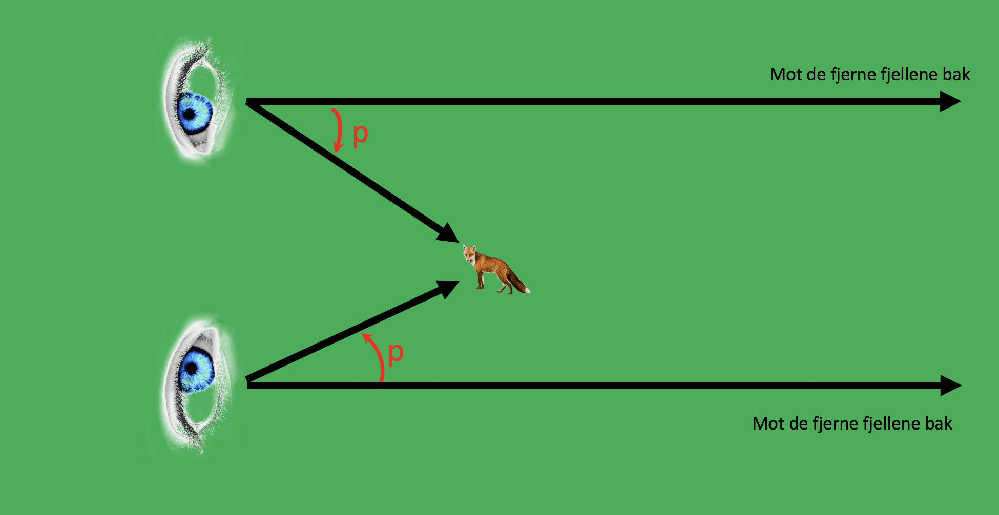

Forrige side🙂 🙁parallakse

Her ser du situasjonen ovenfra. Merk at siden fjellene er veldig langt borte så vil linjene fra hver av øynene til fjellene være nesten paralelle (har du lagt merke til at hvis du kjører bil og har månen rett over deg, så vil månen enda være rett over deg etter at du har kjørt en god stund. Linja fra deg til månen er rett opp i begge tilfeller). Ser du at fra det ene øyet er reven en vinkel p til venstre for fjellet, fra det andre øyet er reven en vinkel p til høyre? Ja, ser det nå!